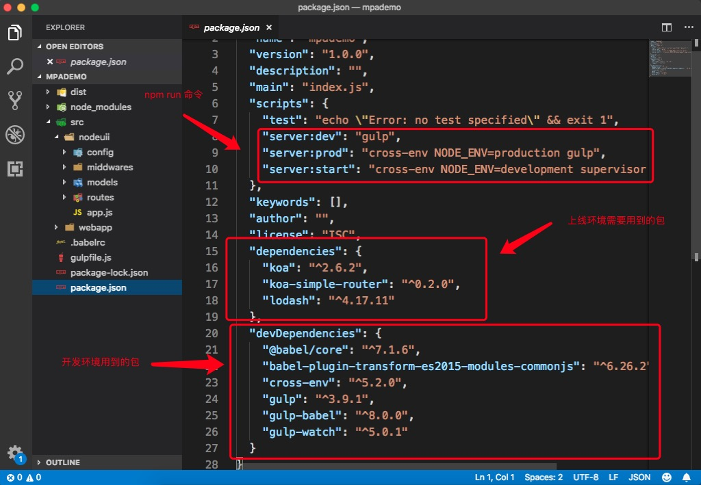
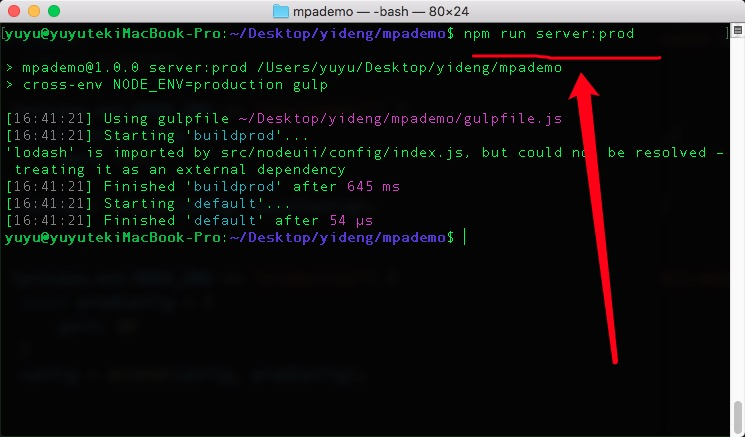

架构师启蒙课第三讲
配置mpa多页架构
项目配置步骤：
- 新建项目文件夹，如：mpademo
- 在vscode中打开项目。
- 初始化项目，npm init -y
- mpa多页架构是前后端分离的，多页必须要有后台，所以，我们在项目根目录下创建nodeuii和webapp两个目录，nodeuii存放后台代码，webapp存放前端代码。
- 项目根目录下创建gulpfile.js文件，因为我们需要用gulp编辑node代码，将node不能识别的import编译成node认识的require();
- 在nodeuii目录下创建app.js文件和config、routes、models、middwares文件夹。
- 在config文件夹下创建index.js，在routes目录下创建routesInit.js。
-
安装koa,并在app.js文件中引入koa、config/index.js和routes/routesInit.js并编写代码。
//项目搭建中使用到的npm包
npm install koa --save
npm install lodash --save
npm install gulp --save-dev
npm install gulp-babel --save-dev
npm install @babel/core --save-dev
npm install babel-plugin-transform-es2015-modules-commonjs --save-dev
npm install cross-env --save-dev
-
各文件中的代码
-
app.js代码
import Koa from "koa";
import config from "./config";
import routesInit from "./routes/routesInit.js"
import router from 'koa-simple-router'
const app = new Koa();
routesInit.init(app,router);
app.listen(config.port,()=>{
console.log(`监听的端口是：${config.port}`);
});
-
routesInit.js代码
const routesInit = {
init(app,router){
app.use(router(_ => {
_.get('/', (ctx, next) => {
ctx.body = 'hello'
})
}));
}
}
export default routesInit;
-
config.js
import {extend} from "lodash";
let config = {
env: process.env.NODE_ENV
}
if (process.env.NODE_ENV == "development") {
const localConfig = {
port: 8081
}
config = extend(config, localConfig);
}
if (process.env.NODE_ENV == "production") {
const proConfig = {
port: 80
}
config = extend(config, proConfig);
}
export default config;
-
gulpfile.js
const gulp = require("gulp");
const watch = require("gulp-watch");
const babel = require("gulp-babel");
//开发环境的gulp
gulp.task("builddev", () => {
return watch('src/nodeuii/**/*.js',{
ignoreInitial:false
},()=>{
gulp.src('src/nodeuii/**/*.js')
.pipe(babel({
babelrc:false,
"plugins": ["transform-es2015-modules-commonjs"]
}))
.pipe(gulp.dest('dist'))
})
});
let _task = ["builddev"]
if (process.env.NODE_ENV == "production") {
_task = ["buildprod"];
}
gulp.task("default",_task);
-
package.json
"scripts": {
"test": "echo \"Error: no test specified\" && exit 1",
"server:dev": "gulp",
"server:prod": "cross-env NODE_ENV=production gulp",
"server:start": "cross-env NODE_ENV=development supervisor ./dist/app.js"
},

-
这时候，打开两个终端，cd 到项目目录，一个执行npm run server:dev 生成dist目录。一个执行npm run server:start运行项目代码。在浏览器中输入localhost:8081就可以看见我们在代码中所写的hello world。

- 而这时候我们再看dist目录里面的代码，已经编辑成了node所能识别的代码。
-
配置上线时的环境，用到的npm 包有:
npm install --save-dev gulp-rollup
-
gulpfile.js中添加上线环境配置
//上线环境的gulp
gulp.task("buildprod", () => {
return gulp.src('src/nodeuii/**/*.js')
.pipe(babel({
babelrc:false,
ignore:['./src/nodeuii/config/index.js'],
"plugins": ["transform-es2015-modules-commonjs"]
}))
.pipe(rollup({
output:{
format:"cjs"
},
input: './src/nodeuii/config/index.js'
}))
.pipe(gulp.dest('./dist'));
});
-
在config/index.js中写一些多余的测试代码。
if(false){
console.log(123);
}
- 执行npm run server:prod

16. 查看dist目录中的代码是否已经去掉多余
17. 极至的将上线代码去多余,在rollup身上有一个插件叫rollup-plugin-replace,安装rollup-plugin-replace，并在gulpfile.js中使用。
const replace = require('rollup-plugin-replace');
.pipe(rollup({
output:{
format:"cjs"
},
plugins: [
replace({
"process.env.NODE_ENV": JSON.stringify('production')
})
],
input: './src/nodeuii/config/index.js'
}))
.pipe(gulp.dest('./dist'));

 18. 这时候是不能运行npm run server:start的，因为会报错，只能将gulp.task分开写。这里需要安装gulp-sequence，并在gulpfile.js中引用
18. 这时候是不能运行npm run server:start的，因为会报错，只能将gulp.task分开写。这里需要安装gulp-sequence，并在gulpfile.js中引用
npm install --save-dev gulp-sequence
const gulpSequence = require("gulp-sequence");
-----------------------------------------
//上线环境的gulp
gulp.task("buildprod", () => {
return gulp.src('src/nodeuii/**/*.js')
.pipe(babel({
babelrc:false,
ignore:['./src/nodeuii/config/index.js'],
"plugins": ["transform-es2015-modules-commonjs"]
}))
.pipe(gulp.dest('./dist'));
});
//分开写
gulp.task("buildconfig", () => {
gulp.src('src/nodeuii/**/*.js')
.pipe(rollup({
output:{
format:"cjs"
},
plugins: [
replace({
"process.env.NODE_ENV": JSON.stringify('production')
})
],
input: './src/nodeuii/config/index.js'
}))
.pipe(gulp.dest('./dist'));
});
let _task = ["builddev"]
if (process.env.NODE_ENV == "production") {
// _task = ["buildprod"]
_task = gulpSequence("buildprod","buildconfig");
}
gulp.task("default",_task);
 19. 由于这是上线环境，所以如果想要成功运行的话需要走pm2，我们cd dist 执行sudo node app.js 运行app.js
20. 到这里我们就手写了一个mvc前端mpa多页框架。接下来就要选择一些有利于开发的插件了。
21. 容错，在实际开发中难免会遇到这样那样的错，如404。这时我们就要学会处理这些错误。
22. 在middwares目录下创建errorHandler.js，书写代码：
19. 由于这是上线环境，所以如果想要成功运行的话需要走pm2，我们cd dist 执行sudo node app.js 运行app.js
20. 到这里我们就手写了一个mvc前端mpa多页框架。接下来就要选择一些有利于开发的插件了。
21. 容错，在实际开发中难免会遇到这样那样的错，如404。这时我们就要学会处理这些错误。
22. 在middwares目录下创建errorHandler.js，书写代码：
const errorHandler = {
error(app){
app.use(async(ctx,next)=>{
await next();
if(404 != ctx.status)return;
ctx.status = 404;
ctx.body = '<script type="text/javascript" src="//qzonestyle.gtimg.cn/qzone/hybrid/app/404/search_children.js" charset="utf-8" homePageUrl="/" homePageName="回到我的主页"></script>'
});
}
}
export default errorHandler;
23. app.js中引用
import Koa from "koa";
import config from "./config";
import routesInit from "./routes/routesInit.js"
import router from 'koa-simple-router'
import errorHandler from './middwares/errorHandler';
const app = new Koa();
routesInit.init(app,router);
errorHandler.error(app);
app.listen(config.port,()=>{
console.log(`监听的端口是：${config.port}`);
});
24. 打开两个窗口，执行我们的代码。如果用户输入了404的地址，就会跳转到指定页面。
25. 收集错误，记日志。需要安装log4js。
npm install --save log4js
-
由于我们是收集错误信息，所以我们先收集一下刚才的404，在app.js中引入log4js，并传到404错误代码里面收集。
//app.js
import Koa from "koa";
import config from "./config";
import routesInit from "./routes/routesInit.js"
import router from 'koa-simple-router'
import errorHandler from './middwares/errorHandler';
import log4js from 'log4js';
log4js.configure({
appenders: { cheese: { type: 'file', filename: __dirname+'/logs/mylogs.log' } },
categories: { default: { appenders: ['cheese'], level: 'error' } }
});
const logger = log4js.getLogger('cheese');
const app = new Koa();
routesInit.init(app,router);
errorHandler.error(app,logger);
app.listen(config.port,()=>{
console.log(`监听的端口是：${config.port}`);
});
//errorHandler.js
const errorHandler = {
error(app,logger){
app.use(async(ctx,next)=>{
await next();
if(404 != ctx.status)return;
ctx.status = 404;
logger.error("我的天呐，访问了404");
ctx.body = '<script type="text/javascript" src="//qzonestyle.gtimg.cn/qzone/hybrid/app/404/search_children.js" charset="utf-8" homePageUrl="/" homePageName="回到我的主页"></script>'
});
}
}
export default errorHandler;
-
这时候我们仍然需要打开两个窗口，运行代码，当我们访问到404页面的时候，就会看到dist目录中生成了log目录，并记录了错误信息。
- 到此，架构师启蒙课第三讲就结束了，整个项目所用到的npm 包有：